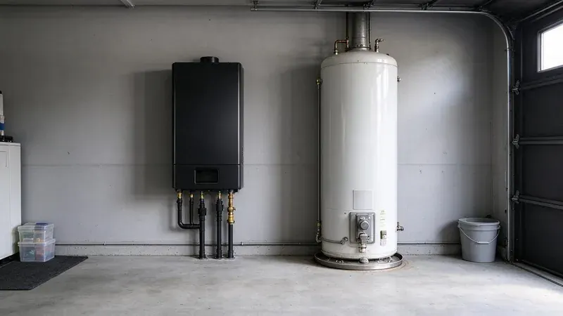
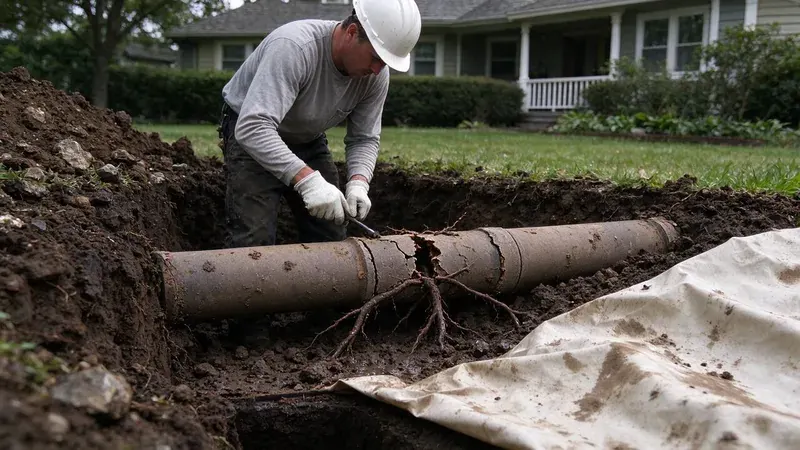
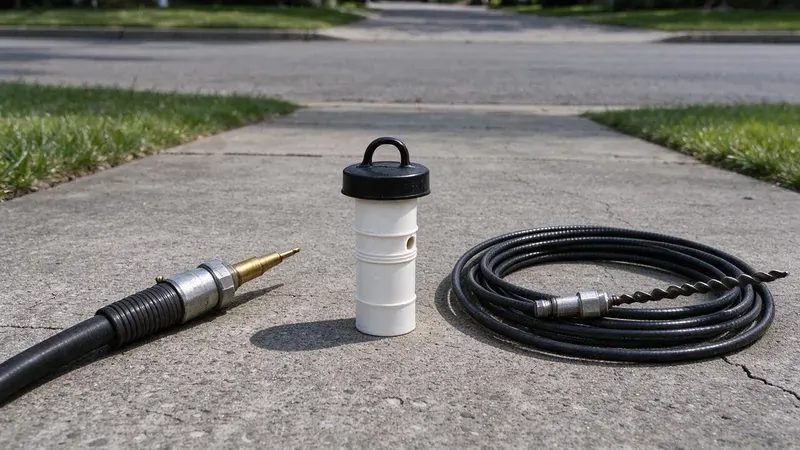

Plumbing Tips & Updates From FHN Plumbing
 15Oct, 2026
15Oct, 2026Slab Leak Warning Signs Every Washington Homeowner Should Know
Most slab leaks stay hidden for weeks. Here is what to look for in a Washington home before the foundation pays for it.
 6Oct, 2026
6Oct, 2026How to Protect Your Pipes Before the Next Washington Freeze
A split pipe in a wall can dump hundreds of gallons overnight. Here is how to keep a Washington home from freezing up.
 27Sep, 2026
27Sep, 2026Hard Water in Washington: When a Water Softener Pays for Itself
Scale on the faucets is the visible part of the problem. Here is the math on softening water in a Washington home.

18Sep, 2026Tankless vs. Tank Water Heaters: What Works Best in Washington
Both kinds of water heater work. The right one for a Washington home depends on your gas line and how your family uses hot water.
 9Sep, 2026
9Sep, 2026Kitchen Sink Backups: Causes, Prevention and Quick Solutions
A backed-up kitchen sink stops dinner cold. Here is why it happens and what you can try first.

31Aug, 2026Underground Pipe Damage: Common Causes and Modern Repair Solutions
A broken pipe underground does not always mean a trench across the yard. Here is how buried lines fail and how it gets fixed.

22Aug, 2026Hydro Jetting vs. Snaking: Which Drain Cleaning Method Do You Need?
Which tool you need depends on what is in the pipe. Here is when a snake is enough and when jetting makes more sense.
 13Aug, 2026
13Aug, 2026Why a Sewer Camera Inspection Belongs on Every Washington Home Inspection
The sewer lateral is one of the priciest systems in a house and the one most inspections skip. A 45 minute camera scope fills it.
Have a plumbing question we did not cover?
Our team is happy to talk it through and give you a straight answer.